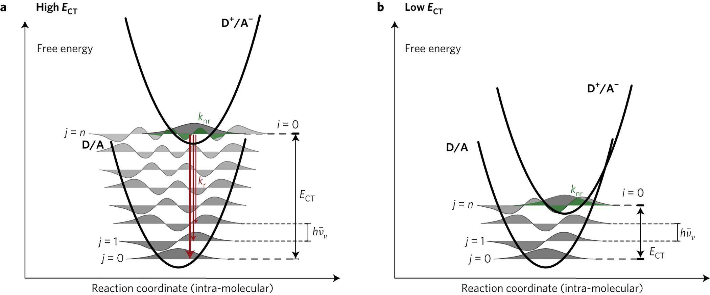

Quantum Mechanics for Organic Electronics · Lecture 04
The Quantum Harmonic Oscillator
Why do organic semiconductors have that characteristic vibronic progression in their spectra?
The harmonic oscillator gives us the language to understand molecular vibrations and the Franck-Condon principle.
← → navigate · click empty space to advance · F fullscreen
Motivation · organic electronics
Why do PL spectra look like a "comb"?
The experimental observation
When you measure the photoluminescence of a well-ordered organic semiconductor (e.g. anthracene crystal, P3HT film), the spectrum is not a single peak. Instead you see a series of equally-spaced peaks:
The spacing between peaks ≈ 0.17 eV — the energy of a C=C stretching vibration.
Today's goal
Understand where this vibronic progression comes from. The answer requires two ingredients:
- Quantum harmonic oscillator — vibrational energy levels are equally spaced
- Displaced oscillator model — the excited state has a shifted equilibrium geometry
Together they give us the Franck-Condon principle and the Huang-Rhys factor $S$.
If vibrational energy levels are equally spaced, and electronic transitions are "vertical" — can we predict the shape of the PL spectrum from just two numbers ($\hbar\omega$ and $S$)?
Classical review
The harmonic oscillator: a mass on a spring
The model
A particle of mass $m$ experiences a restoring force proportional to displacement from equilibrium:
The potential is a parabola. The classical particle oscillates back and forth with angular frequency:
Where does this appear in molecules?
- C=C bond stretch: two carbon atoms connected by a "spring" (chemical bond)
- Near equilibrium, any bond potential looks parabolic (Taylor expansion)
- $k$ = bond stiffness, $m$ = reduced mass of two atoms
Classically the oscillator can have any energy. Quantum mechanically, only discrete values are allowed — and the spacing turns out to be perfectly uniform.
Quantum result
Energy levels of the quantum harmonic oscillator
The Schrödinger equation
The solution (via Hermite polynomials or ladder operators) gives:
Three key features
- Equal spacing: every adjacent pair of levels is separated by exactly $\hbar\omega$
- Zero-point energy: the ground state has $E_0 = \frac{1}{2}\hbar\omega \neq 0$
- Infinite ladder: unlike the finite well, there is no maximum $n$
In the box, $E_n \propto n^2$ — levels spread apart. Here $E_n \propto n$ — levels are perfectly evenly spaced. This uniform spacing is why vibronic peaks in organic semiconductor spectra are equally spaced.
Wave functions
Shape of the harmonic oscillator eigenstates
$\psi_n$ has $n$ nodes. The ground state ($n=0$) is a Gaussian — no nodes, maximum at center. As $n$ increases, the wave function extends further into the classically forbidden region (beyond the parabola's turning points).
Algebraic method · brief
Ladder operators: an elegant shortcut
Definition
Define two operators from position $\hat x$ and momentum $\hat p$:
What they do
$\hat a^\dagger$ raises by one quantum; $\hat a$ lowers by one quantum.
Why we mention this
- The Hamiltonian becomes: $\hat H = \hbar\omega(\hat a^\dagger \hat a + \frac{1}{2})$
- The entire energy spectrum follows from the algebra — no differential equation needed
- Same formalism reappears for photons (quantum optics) and phonons (solid state)
We won't derive wave functions with ladder operators. The point is: the harmonic oscillator is so central that it has its own algebraic machinery, and that machinery appears again in every branch of quantum physics involving bosonic excitations.
Application · infrared spectroscopy
Molecular vibrations as quantum harmonic oscillators
Bond vibrations are quantized
Each vibrational mode of a molecule (stretching, bending, rocking...) is approximately a quantum harmonic oscillator. The energy quanta:
A molecule absorbs infrared light when the photon energy matches one of these quanta: $h\nu = \hbar\omega_{\text{vib}}$.
For a harmonic oscillator coupled to IR radiation: $\Delta n = \pm 1$ only. One photon excites one vibrational quantum.
Reading an IR spectrum
| Vibration | $\tilde\nu$ (cm⁻¹) | $\hbar\omega$ (eV) |
|---|---|---|
| C–C stretch | 800–1200 | 0.10–0.15 |
| C=C stretch | 1600–1680 | 0.20–0.21 |
| C=O stretch | 1700–1750 | 0.21–0.22 |
| C–H stretch | 2850–3100 | 0.35–0.38 |
| O–H stretch | 3200–3600 | 0.40–0.45 |
The C=C stretch at ~1600 cm⁻¹ is the vibration that dominates the vibronic progression in electronic spectra. That's why the peak spacing in PL spectra is always ≈ 0.17–0.20 eV.
The key model
The displaced harmonic oscillator
Why the equilibrium shifts
When a molecule absorbs a photon and its electron jumps to an excited state, the bonding character changes. For example:
- Exciting a π→π* transition weakens the C=C bond
- Weaker bond → equilibrium bond length increases
- The excited-state parabola is shifted to larger $Q$
The model
Ground state $S_0$ and excited state $S_1$ are both harmonic oscillators with the same frequency $\omega$, but the excited state equilibrium is displaced by $\Delta Q$:
The Franck-Condon principle
Vertical transitions: nuclei are frozen during electronic jumps
Physical picture
Electrons move ~1000× faster than nuclei (Born-Oppenheimer). When an electronic transition occurs:
- The nuclei don't have time to move
- The transition is vertical on the configuration coordinate diagram
- The molecule lands in the excited state at the ground-state geometry
Transition intensity
The probability of a $|0\rangle \to |n'\rangle$ vibronic transition is proportional to the overlap integral squared:
These are called Franck-Condon factors.
Geometric meaning
The ground-state vibrational wave function $\chi_0^{(0)}$ (a Gaussian centered at $Q=0$) is "projected" onto the excited-state vibrational eigenstates $\chi_{n'}^{(1)}$ (Gaussians × Hermite polynomials centered at $Q=\Delta Q$).
Large displacement $\Delta Q$ → ground-state Gaussian overlaps more with higher $n'$ states → more vibronic peaks in the spectrum.
Interactive · vibronic spectrum
Adjust $S$ and $\hbar\omega$ to simulate a PL spectrum
Increase S: the 0-0 peak weakens and higher vibronic peaks grow — the spectrum envelope shifts and broadens. Change ℏω: the peak spacing changes (wider for stiffer bonds, narrower for softer modes).
Spectral symmetry
Absorption and emission are mirror images
In the harmonic approximation
If both ground and excited states are harmonic with the same $\omega$:
- Absorption: $|0\rangle \to |n'\rangle$ — peaks at $E_{00} + n'\hbar\omega$
- Emission: $|0'\rangle \to |n\rangle$ — peaks at $E_{00} - n\hbar\omega$
- Both have the same Poisson envelope
- They are mirror images about the 0-0 transition
Stokes shift
The energy difference between absorption maximum and emission maximum:
Larger electron-phonon coupling → larger Stokes shift → more energy lost to vibrations.
If ground and excited states have different frequencies ($\omega_0 \neq \omega_1$), or if there are anharmonic effects, or if the emission comes from a geometry-relaxed state (e.g. excimer) — the mirror symmetry is violated.
Case study
Reading a real spectrum: anthracene
Anthracene fluorescence
Anthracene is a rigid molecule with a well-defined vibronic progression. From the PL spectrum:
- Peak spacing: ~1400 cm⁻¹ (0.17 eV) — C=C stretch
- 0-0 peak is the strongest → $S < 1$
- Estimated $S \approx 0.6$–$0.8$
- Mirror-image symmetry holds well
Extracting $S$ from experiment
Method: ratio of 0-1 peak to 0-0 peak intensity:
More precisely, fit the full Poisson envelope to extract both $S$ and $\hbar\omega$.
Anthracene is a rigid planar molecule. Excitation barely changes the bond lengths → small $\Delta Q$ → small $S$ → sharp vibronic peaks with dominant 0-0 line.
Organic electronics connection
Reorganization energy and charge transfer
The bridge to Marcus theory
The inner (intramolecular) reorganization energy $\lambda_i$ — a key parameter in charge transport — is directly related to $S$:
This connects spectroscopy (measuring $S$ from PL) to transport (predicting charge-transfer rates from $\lambda$).
What $\lambda_i$ controls
- Charge-transfer rate: $k_{CT} \propto \exp\!\left(-\frac{(\Delta G + \lambda)^2}{4\lambda k_BT}\right)$
- Small $\lambda_i$ → faster charge transport → better device
- Rigid molecules (small $S$) → good organic semiconductors
Sharp vibronic peaks → small $S$ → small $\lambda$ → high mobility. A simple PL measurement predicts charge-transport quality.

Displaced parabolas for charge transfer: (a) high $E_{CT}$ (b) low $E_{CT}$
Nature Energy 2, 17053 (2017)
D/A and D⁺/A⁻ states are displaced oscillators. $k_r$ (radiative) and $k_{nr}$ (non-radiative) rates depend on the Franck-Condon overlap between vibrational levels — exactly the physics we derived.
Summary · what the HO model explains
From quantum mechanics to materials design
Bond vibrations absorb IR light
Each bond = harmonic oscillator. IR absorption occurs when $h\nu = \hbar\omega_{\text{vib}}$. The selection rule $\Delta n = \pm 1$ comes from the linear coupling between the oscillator and the radiation field.
Electronic transitions ride on vibrations
Displaced oscillator + Franck-Condon principle → Poisson-distributed vibronic peaks. The shape is controlled by a single dimensionless number: the Huang-Rhys factor $S$.
$S$ predicts mobility trends
$\lambda_i = S\hbar\omega$ feeds directly into Marcus charge-transfer rates. Rigid molecules with small $S$ are better organic semiconductors — and you can see this from their sharp PL spectra.
The quantum harmonic oscillator is not just a textbook exercise. It is the language of molecular vibrations, optical spectra, and charge transport in organic electronics.
Summary
Quantum Harmonic Oscillator · Cheat Sheet
Core formulas
- Equal spacing: $\Delta E = \hbar\omega$ for all $n$
- Huang-Rhys: $S = \Delta Q^2 m\omega / (2\hbar)$
- $I_{0-1}/I_{0-0} = S$ for quick experimental extraction
The quantum harmonic oscillator provides equally-spaced vibrational energy levels; combined with the Franck-Condon principle, it explains why organic semiconductor spectra have uniformly-spaced vibronic peaks whose envelope is a Poisson distribution controlled by a single number $S$.
$S$ measures molecular rigidity. Small $S$ → sharp spectra, small reorganization energy, high charge mobility. This connects a simple spectroscopic measurement to device performance.
Quantum tunneling — how do charges cross energy barriers at metal/organic interfaces? Keywords: transmission coefficient, WKB, Fowler-Nordheim injection.